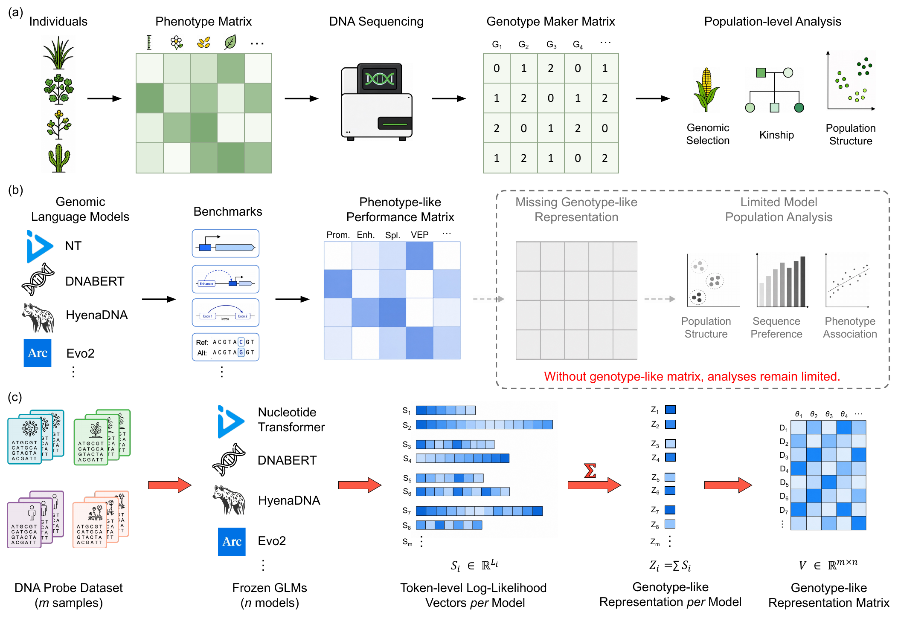
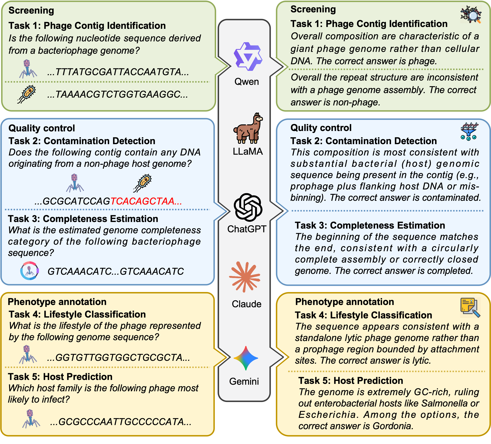

About Me
I am a PhD student in the Data Science and Analytics Thrust at the Hong Kong University of Science and Technology (Guangzhou), advised by Prof. Yanlin Zhang, and co-supervised by Prof. Jiguang Wang at HKUST.
I am broadly interested in LLM and AI Agent for Biomedical Science and Computational Biology.
Latest News
- Our work ABLE was accepted to the main conference of EMNLP 2026.
- Our work BioMaster was selected as the cover article of Patterns (Vol. 7, Issue 8).
- Our work GLMap was accepted for an oral presentation at iscbAI 2026.
- Our work BioMaster was accepted by Patterns.
- Two papers are accepted by ACL 2026, and one paper is rejected.
- Started my PhD study at HKUST(GZ).
Featured Work

PhageBench: Can LLMs Understand Raw Bacteriophage Genomes?
Findings of the Annual Meeting of the Association for Computational Linguistics (Findings of ACL), 2026.
Education
-
Ph.D. student Data Science and Analytics, HKUST(GZ)
-
MPhil Data Science and Analytics, HKUST(GZ)
-
Bachelor of Science Chemistry, Lanzhou University